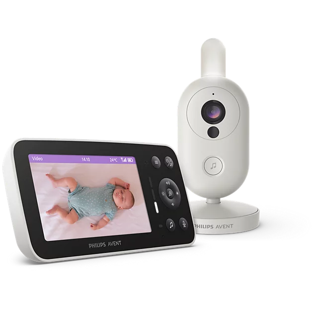

Philips Avent Video Baby Monitor
Rating distribution
Complaints also appear within 4- and 5-star reviews.
Rating trends
Average rating
Star rating distribution over time
View recorded ratings
| Date | Average / 5 | 5 ★ | 4 ★ | 3 ★ | 2 ★ | 1 ★ | Total | Evidence |
|---|
Change in rating counts
Ratings by platform
Displayed platform scores · shared pools counted onceCurrent evidence: all 40 readable reviews are promotional or Vine. Philips shares 30 SCD871 reviews across three SKU pages. Four newly observed Amazon reviews have no explicit reviewed-SKU label and are marked family-level/unknown.
Reviews
Top positive contributors
REVIEWSTop detractors
REVIEWSClick a theme to see the reviews counted. Each review counts once per theme and can mention several themes. These are mentions, not estimates of what caused the star rating. Quotes are short, exact excerpts; English translations are labelled separately.
Know what the evidence covers.
| Product | Amazon.de | Philips.de | bol.com |
|---|
A shared listing score does not establish separate SKU experience. “Not verified” means a matching listing has not been confirmed, not zero reviews.
How to read this dashboard
Scope. The supplied German and Dutch storefronts. Amazon's 10 global reviews include seven from Germany and three from France. The Philips pool is counted once.
Overall score. The combined rating covers the 40 verified individual Philips + Amazon ratings; bol is excluded because SCD871 is inaccessible: (29 × 5 + 11 × 4) ÷ 40 = 4.725, displayed as 4.73/5. This is a partial-coverage arithmetic mean, not a direct comparison with yesterday's 4.68 rounded-platform estimate. Amazon's displayed 91%/9% histogram is weighted; observed individual reviews are nine five-star and one four-star.
Review coding. Explicit positive and negative mentions, combining body text and pros/cons. The ledger covers selected themes, not an exhaustive sentiment classification. The battery theme includes adequate or good battery life, not only long duration. Two no-Wi-Fi mentions were removed after checking wording that only described no cloud upload or no phone use. Distinct review texts do not necessarily mean distinct purchasers.
Freshness. Checked 9 October 2026, 10:44-10:52 HKT. All 30 Philips and 10 Amazon reviews were read. Philips has four new identities since 8 October. Amazon has four newly observed identities since 7 October; no complete 8 October review snapshot exists. bol SCD861 shows no reviews in today's web extraction; bol SCD871 blocked access and retains the zero reported by the earlier published check at 10:26 on 9 October as cached evidence. Two previously uncounted criticisms (phone access and battery duration) were added as coding corrections. New reviews also mention camera mains power, requested motion detection, phone access, and parent-unit battery limitations. Daily research starts at 09:00 Asia/Hong_Kong and requires this computer and Codex to be running.
Source links and coverage limitations
Amazon SCD861/26 and SCD863/26, and bol SCD863/26 remain unverified. The Philips shared pool cannot supply independent SCD861 or SCD863 consumer-experience conclusions.